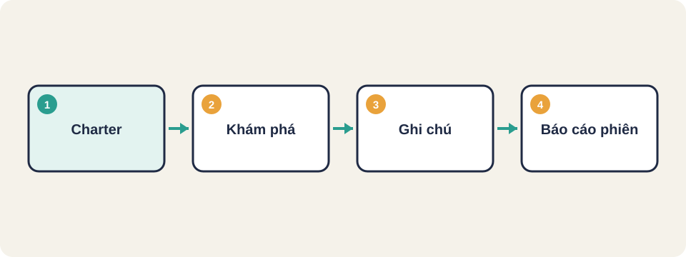
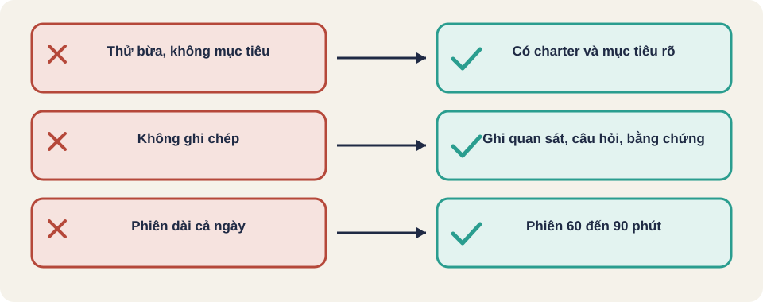

Hình vẽ gốc, dùng để minh họa thứ tự các bước chính của bài.
Học, thiết kế và chạy kiểm thử cùng lúc. Dùng mục tiêu (charter) và phiên làm việc có thời lượng.

Hình vẽ gốc, dùng để minh họa thứ tự các bước chính của bài.
Thuật ngữ trong slide này: Kiểm thử khám phá (exploratory testing): Vừa học sản phẩm vừa kiểm thử, không theo kịch bản cố định nhưng có mục tiêu rõ. · Charter (điều lệ phiên): Một câu mô tả mục tiêu và phạm vi của một phiên khám phá. Không ghi trước lỗi cần tìm.
Kiểm thử khám phá (exploratory testing) là khám phá hệ thống như một người dùng thực tế, không chỉ chạy kịch bản định sẵn. Tester dùng kiến thức, kinh nghiệm và trực giác để tìm lỗi mà các ca đã viết chưa nghĩ tới.
Nguồn: GOV.UK Service Manual, mục Exploratory testing [đã đọc].
Thuật ngữ trong slide này: Kiểm thử khám phá (exploratory testing): Vừa học sản phẩm vừa kiểm thử, không theo kịch bản cố định nhưng có mục tiêu rõ.
| Tiêu chí | Kiểm thử theo kịch bản / tự động | Kiểm thử khám phá |
|---|---|---|
| Câu hỏi chính | Kịch bản đã viết có chạy đúng không? | Có lỗi nào chưa ai nghĩ tới không? |
| Khi nào giỏi | Lặp lại, hồi quy, số lượng lớn | Tính năng mới, hệ thống phức tạp, rủi ro chưa rõ |
| Kết quả điển hình | Đạt/không đạt theo ca | Lỗi mới, câu hỏi về sản phẩm, rủi ro mới |
Sau khi khám phá tìm được lỗi, có thể viết ca tự động để lỗi không quay lại.
Thuật ngữ trong slide này: Kiểm thử khám phá (exploratory testing): Vừa học sản phẩm vừa kiểm thử, không theo kịch bản cố định nhưng có mục tiêu rõ.
Nguồn: GOV.UK [đã đọc].
| Kỹ thuật | Làm gì | Mẹo |
|---|---|---|
| Charter (bản điều lệ) | Ghi phạm vi, mục tiêu, người làm, thời gian, môi trường, dữ liệu. Không ghi trước lỗi cần tìm. | Một câu mục tiêu là đủ, ví dụ "khám phá giỏ hàng khi đổi số lượng nhanh" |
| Mind map (sơ đồ tư duy) | Ghi nhanh các nhánh ý tưởng, không theo thứ tự tuyến tính | Vẽ ngay khi đang thử, không chờ đến cuối |
| Timeboxing (giới hạn thời gian) | Chia phiên thành khung thời gian cố định, dừng để nhìn lại kết quả | Khoảng 60 đến 90 phút mỗi phiên |
Nguồn: GOV.UK [đã đọc].
Thuật ngữ trong slide này: Charter (điều lệ phiên): Một câu mô tả mục tiêu và phạm vi của một phiên khám phá. Không ghi trước lỗi cần tìm. · Timeboxing (giới hạn thời gian): Đặt khung thời gian cố định cho một việc, khi hết giờ thì dừng và nhìn lại.
Charter: Khám phá giỏ hàng khi đổi số lượng nhanh
Phạm vi: trang giỏ hàng, 3 sản phẩm có giá khác nhau
Người làm: Minh (tester)
Thời gian: 60 phút, timebox
Môi trường: Chrome, điện thoại 390px
Dữ liệu: tài khoản có 2 địa chỉ, giỏ rỗng ban đầu
Không bao gồm: thanh toán (có phiên riêng)Thuật ngữ trong slide này: Charter (điều lệ phiên): Một câu mô tả mục tiêu và phạm vi của một phiên khám phá. Không ghi trước lỗi cần tìm.
0-15 phút: thêm, bớt, đổi số lượng liên tục
→ ghi: số lượng âm có bị chặn không?
15-35 phút: tải lại trang giữa lúc đang đổi số lượng
→ thấy: tổng tiền không khớp sau khi tải lại (bằng chứng: ảnh)
35-50 phút: thử với hai tab cùng giỏ hàng
50-60 phút: viết báo cáo phiên, tạo bước tái hiện cho lỗiNguồn: GOV.UK [đã đọc].
Thuật ngữ trong slide này: Charter (điều lệ phiên): Một câu mô tả mục tiêu và phạm vi của một phiên khám phá. Không ghi trước lỗi cần tìm.
Thuật ngữ trong slide này: Charter (điều lệ phiên): Một câu mô tả mục tiêu và phạm vi của một phiên khám phá. Không ghi trước lỗi cần tìm.
Viết charter cho việc khám phá chức năng tìm kiếm sản phẩm trong 45 phút. Charter phải có phạm vi, người làm, môi trường và dữ liệu. Đừng ghi lỗi cần tìm.
Thuật ngữ trong slide này: Charter (điều lệ phiên): Một câu mô tả mục tiêu và phạm vi của một phiên khám phá. Không ghi trước lỗi cần tìm.
Nguồn: FreeLearningResourcesForSoftwareTesters, mục "Exploratory Testing". Một số liên kết gốc không mở được khi soạn bài; kiểm lại trước khi đọc.
Thuật ngữ trong slide này: Kiểm thử khám phá (exploratory testing): Vừa học sản phẩm vừa kiểm thử, không theo kịch bản cố định nhưng có mục tiêu rõ.

Thuật ngữ trong slide này: Charter (điều lệ phiên): Một câu mô tả mục tiêu và phạm vi của một phiên khám phá. Không ghi trước lỗi cần tìm.
Kiểm thử khám phá (exploratory testing)
Charter (điều lệ phiên)
Timeboxing (giới hạn thời gian)
Thuật ngữ trong slide này: Charter (điều lệ phiên): Một câu mô tả mục tiêu và phạm vi của một phiên khám phá. Không ghi trước lỗi cần tìm.